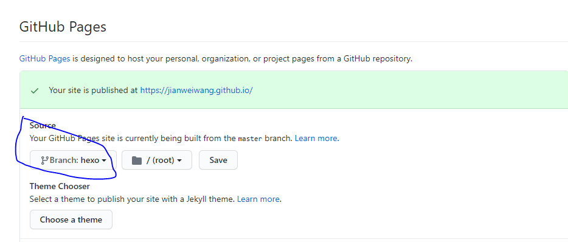

hexo无法展示的问题
前几天遇到了一个问题：博客完成后本地预览没问题，hexo deploy也正常，但是博客网站无法显示最新博客。
现象
如前所述，新部署的博客无法正常展示，进入博客详情页面会显示404；
原因
github pages配置的source有问题，当前配置为了hexo分支，如图下图。但是，在deploy时提交到了master分支，导致无法显示最新博客；

解决方案
修改GitHub pages source配置，改为master即可；
总结
出现这个问题的本质原因还是对GitHub Pages工作原理不甚了解。特此记录一下，希望对其他人有帮助。